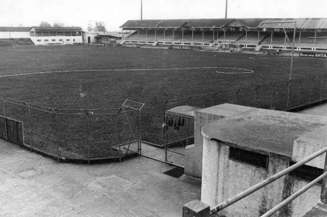

O Sport Club Corinthians Paulista foi fundado em 1º de setembro de 1910, no bairro do Bom Retiro, em São Paulo. O clube nasceu inspirado por uma equipe inglesa chamada Corinthian Football Club, que excursionava pelo Brasil naquele ano.
A fundação aconteceu embaixo de um poste de luz na Rua José Paulino, reunindo um grupo de operários e pequenos comerciantes que sonhavam em ter um time de futebol acessível ao povo.
Os cinco fundadores oficiais do Corinthians foram:
Além deles, Miguel Battaglia, primeiro presidente do clube, ficou marcado pela frase histórica:
“O Corinthians vai ser o time do povo, e o povo é quem vai fazer o time.”
Desde então, o Corinthians cresceu a partir das suas raízes populares, se tornando um dos clubes mais vitoriosos e amados do Brasil.
Nos primeiros anos de sua história, o Corinthians rapidamente se destacou no futebol paulista. Em 1914, apenas quatro anos após sua fundação, o clube conquistou seu primeiro título: o Campeonato Paulista. Esse feito marcou o início da tradição vitoriosa e mostrou a força de um time que nasceu para competir de igual para igual com os grandes da época.
Durante as décadas de 1920 e 1930, o Corinthians se consolidou como uma das principais equipes do estado, acumulando títulos paulistas e fortalecendo sua identidade popular. Enquanto outros clubes eram vistos como elitizados, o Timão se tornava o verdadeiro “time do povo”, abraçado por operários, imigrantes e trabalhadores que encontravam no clube uma representação de suas próprias lutas.
Nos anos seguintes, o clube viveu uma fase desafiadora, marcada pelo famoso jejum de títulos, que durou de 1954 até 1977. Foram 23 anos sem conquistar o Campeonato Paulista, mas, ao contrário do que poderia se esperar, a torcida não abandonou o time. Pelo contrário, cresceu ainda mais, mostrando a paixão inabalável que ajudaria a construir a imagem do Corinthians como uma das torcidas mais fiéis do mundo.
O jejum chegou ao fim em 1977, quando o Corinthians conquistou o Campeonato Paulista diante da Ponte Preta. O gol histórico de Basílio ficou marcado para sempre na memória da Fiel e representou um momento de libertação para o clube e sua torcida.
Em 1928, o Sport Club Corinthians Paulista inaugurou o estádio que ficaria marcado na memória da torcida: o Estádio Alfredo Schürig, mais conhecido como Fazendinha. Localizado no Parque São Jorge, o campo se tornaria um verdadeiro símbolo da ligação entre o clube e o seu povo.
Com capacidade inicial para cerca de 20 mil pessoas, a Fazendinha foi construída em uma época em que o futebol ainda engatinhava no Brasil. Para os corinthianos, no entanto, significava muito mais do que arquibancadas: era a sua casa, o espaço em que o “time do povo” poderia receber seus fiéis torcedores.
O estádio recebeu grandes partidas nas décadas de 1930 e 1940, sendo palco de títulos importantes, jogos históricos e da consolidação do Corinthians como uma potência no futebol paulista. A proximidade da torcida com o campo era um diferencial: quem assistia às partidas na Fazendinha sentia-se quase dentro do gramado.
Apesar de suas dimensões modestas em comparação aos grandes estádios que surgiriam mais tarde, a Fazendinha sempre foi lembrada com carinho. Ela se tornou o ponto de encontro da Fiel, representando a luta, a paixão e a identidade corinthiana.
“A Fazendinha foi mais do que um estádio. Foi o coração corinthiano batendo no Parque São Jorge.”
Nos anos 80, o Corinthians viveu um período que ficaria marcado não apenas por conquistas dentro de campo, mas também por transformações profundas fora dele. Surgiu a Democracia Corinthiana, um movimento inovador liderado por jogadores como Sócrates, Wladimir, Casagrande, Zenon e outros. Diferente de qualquer outro time da época, os atletas tinham voz ativa em decisões que iam desde a escalação até contratações, treino e conduta do clube. Essa liberdade trouxe não apenas resultados esportivos, mas também inspiração social, em plena ditadura militar, promovendo debates sobre cidadania, participação e liberdade.
A Democracia Corinthiana transformou o clube em símbolo de resistência e identidade popular. O Corinthians não era apenas um time de futebol; era uma plataforma que unia a torcida, os jogadores e a sociedade em torno de ideais de participação e liberdade. As cores preto e branco deixavam de ser apenas uma tradição esportiva, tornando-se um símbolo de união e orgulho da classe trabalhadora paulista.
No campo, o time começou a se destacar com grandes campanhas, embora os títulos demorassem a aparecer devido à competitividade do Campeonato Paulista e Brasileiro da época. Mesmo assim, a história desses anos consolidou uma filosofia que influenciaria gerações futuras de jogadores e torcedores.
Entrando nos anos 90, o Corinthians finalmente encontrou o equilíbrio entre essa identidade forte e a busca por títulos. Jogadores como Marcelinho Carioca, Vampeta, Edílson e Ricardinho surgiram como ícones, construindo uma equipe coesa e competitiva. O clube conquistou importantes títulos estaduais e nacionais, incluindo Campeonatos Paulistas e a Copa do Brasil de 1995, reforçando sua posição como uma potência no futebol brasileiro.

O ápice dessa década foi a conquista do Campeonato Brasileiro de 1998, quando o Timão venceu com um time cheio de talento, criatividade e raça. Em 1999, o bicampeonato consolidou o Corinthians como um dos clubes mais vitoriosos do país, mostrando que a união da torcida, da diretoria e dos jogadores poderia levar a grandes resultados. Esses anos também foram marcados por clássicos memoráveis contra Palmeiras, São Paulo e Santos, partidas que ficaram eternizadas na memória da Fiel.
“A Democracia Corinthiana e as conquistas dos anos 90 mostraram que o Corinthians era mais do que um time: era a paixão de um povo.”
O início dos anos 2000 foi marcado por grandes feitos do Sport Club Corinthians Paulista, que conquistou títulos inesquecíveis e se consolidou como uma das maiores potências do futebol brasileiro.
Em 2000, o Timão entrou para a história ao vencer o primeiro Mundial de Clubes da FIFA, realizado no Brasil. Na fase de grupos, derrotou Raja Casablanca e Al-Nassr, além de empatar em 2x2 contra o poderoso Real Madrid, com dois golaços de Edílson "Capetinha". Na final, diante do Vasco da Gama, o Corinthians venceu nos pênaltis, com Dida brilhando e garantindo a taça inédita.
Em 2001, o clube levantou o título do Campeonato Paulista, reforçando sua supremacia no estado.
Já em 2002, veio mais uma grande conquista: a Copa do Brasil, o segundo título da competição na história do clube, após vitória sobre o Brasiliense na final.
Os anos de 2003 e 2004 foram de transição. Apesar da expectativa na Libertadores de 2003, o Timão caiu para o River Plate e enfrentou dificuldades financeiras, o que levou à controversa parceria com a MSI (Media Sports Investments).
Essa parceria trouxe craques como Carlos Tévez e Mascherano, e em 2005, o Corinthians conquistou seu quarto Campeonato Brasileiro. O título veio em meio a polêmicas de arbitragem e jogos anulados, mas o talento de Tévez foi decisivo, levando o Timão ao topo do futebol nacional.
"Entre 2000 e 2005, o Corinthians construiu uma era de conquistas inesquecíveis, do Mundial à consagração no Brasileirão."